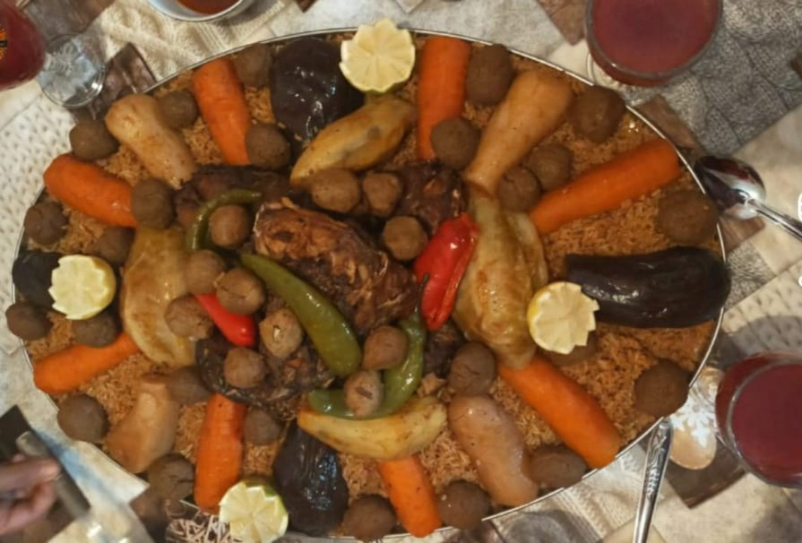

Rice with Fish

Description
Rice with fish is a popular dish in many cultures and can be prepared in a variety of ways depending on the region and culinary tradition. Here is a simple recipe for a delicious and easy-to-make rice and fish dish:
Ingredients
- 1 pound white fish fillets (such as cod or tilapia)
- 1 onion, chopped
- 2 cloves garlic, minced
- Vegetables
- 2 cups chicken broth
- 1 teaspoon smoked paprika
- Broth
Steps
- Rinse the rice in a fine-mesh sieve and set aside to drain.
- In a large skillet or Dutch oven, heat the olive oil over medium heat. Add the onion and cook until translucent, about 5 minutes.
- Add the garlic and red bell pepper and cook for another 2-3 minutes./li>
- Add the rice to the skillet and stir to combine with the vegetables.
- Fluff the couscous with a fork to separate the grains.
- Add the chicken broth, smoked paprika, cumin, salt, and pepper and stir to combine.